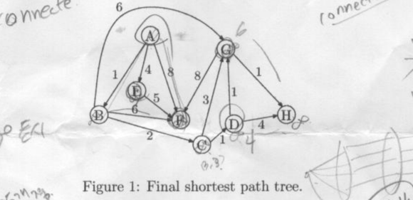

문제 본문은 원문 영어 그대로 옮긴 것이다. 모호한 스캔·오타는 고치지 않고 주석으로 표시했다. 출처: Drive 즐겨찾기 '4분반 / 알고리즘(오은진) / 기출' PDF와 SHA-256 대조 완료.
(10pts) Fibonacci numbers F0, F1, F2, … are defined by the rule
Use induction to prove that Fn ≥ 20.5n for n ≥ 6.
강한 귀납법. F₆=8=2³이고 F₇=13≥2³·⁵이므로 두 기저가 성립한다. 이제 n≥8이라 하고 모든 6≤r<n에서 명제가 성립한다고 가정한다.
피보나치 점화식과 귀납 가정으로
마지막 부등식은 1/√2 + 1/2 ≈ 1.207 > 1에서 따른다. 따라서 강한 귀납법으로 모든 n≥6에 대해 성립한다. 이 문항은 증명 문제이므로 알고리즘 시간·공간 분석은 해당하지 않는다.
(10pts) Given a connected, undirected graph G (with n nodes and m edges), design a O(n+m) time algorithm that finds an edge, if there exist, you can remove from G while still leaving G connected?
알고리즘. DFS로 스패닝 트리 T를 만들고, 원래 그래프의 간선 중 T에 속하지 않는 간선이 있으면 그 간선 하나를 반환한다. 없으면 “그런 간선 없음”을 반환한다.
정당성. 트리에 속하지 않는 간선 e=(u,v)가 있으면 트리 안에 u와 v를 잇는 경로가 있다. 따라서 e는 그 경로와 함께 사이클을 이루고, e를 삭제해도 그 경로가 대체 연결을 제공하므로 그래프는 연결 상태를 유지한다. 반대로 비트리 간선이 없으면 연결 그래프 자체가 트리다. 트리의 모든 간선은 다리(bridge)이므로 어떤 간선을 지우든 연결성이 깨진다.
복잡도. DFS와 간선 스캔은 시간 O(n+m), 탐색 자료구조 공간은 O(n+m).
(10pts) Suppose Dijkstra's shortest path algorithm is run on the following graph in Figure 1, starting at node A. Draw a table showing the intermediate distance values of all the nodes at each iteration of the algorithm, and show the final shortest path tree.

그림 판독 메모 — Figure 1 (caption: "Final shortest path tree.") — 8 nodes A, B, C, D, E, F, G, H. 레이아웃: 상단 A(좌)·G(우), 중단 B(좌)·E·F(중)·D(우)·H(맨우), 하단 C. 판독된 간선·가중치 (인쇄분): A–B: 1, A–E: 4, A–F: 8, A–G: 6(상단 곡선), B–F: 6, E–F: 5, B–C: 2, F–G: 8, C–G: 3, D–G: 1, G–H: 1, C–D: 1, D–H: 4. - 주의: 스캔에는 화살표 끝(arrowheads)과 노드 위 동그라미가 보이나 이는 손글씨 주석(학생이 그은 SPT 흔적)으로 보임. 간선 방향 여부는 인쇄 원본만으로 확정 불가 → 그래프는 무방향으로 인쇄된 것으로 판독하되, 확정 못함을 표기. B–E 간선은 없음(그 위치 선은 A–E 선).
조건부 판독. 아래 표는 스캔의 화살표·손글씨 주석만으로 방향을 확정할 수 없으므로, 판독 메모에 적힌 13개 가중치 간선을 무방향으로 해석했을 때의 Dijkstra 실행이다. 실제 인쇄 화살표가 방향을 뜻한다면 방향이 확정된 그래프에 대해 다시 계산해야 하며, 이 표를 그 경우의 확정 답으로 볼 수 없다.
동률은 거리 4의 D와 E 중 D를 먼저 확정하는 규칙을 사용한다. 각 행은 해당 정점을 확정하고 그 인접 간선을 완화한 뒤의 모든 임시 거리다.
| 반복 | 이번 확정 | 확정 집합 | A | B | C | D | E | F | G | H |
|---|---|---|---|---|---|---|---|---|---|---|
| 0 | — | ∅ | 0 | ∞ | ∞ | ∞ | ∞ | ∞ | ∞ | ∞ |
| 1 | A(0) | {A} | 0 | 1 | ∞ | ∞ | 4 | 8 | 6 | ∞ |
| 2 | B(1) | {A,B} | 0 | 1 | 3 | ∞ | 4 | 7 | 6 | ∞ |
| 3 | C(3) | {A,B,C} | 0 | 1 | 3 | 4 | 4 | 7 | 6 | ∞ |
| 4 | D(4) | {A,B,C,D} | 0 | 1 | 3 | 4 | 4 | 7 | 5 | 8 |
| 5 | E(4) | {A,B,C,D,E} | 0 | 1 | 3 | 4 | 4 | 7 | 5 | 8 |
| 6 | G(5) | {A,B,C,D,E,G} | 0 | 1 | 3 | 4 | 4 | 7 | 5 | 6 |
| 7 | H(6) | {A,B,C,D,E,G,H} | 0 | 1 | 3 | 4 | 4 | 7 | 5 | 6 |
| 8 | F(7) | {A,B,C,D,E,F,G,H} | 0 | 1 | 3 | 4 | 4 | 7 | 5 | 6 |
최종 거리. d(A..H)=(0,1,3,4,4,7,5,6). 위 무방향 판독에서 최단 경로 트리의 부모 간선은 A–B, B–C, C–D, A–E, B–F, D–G, G–H다. 총 가중치는 1+2+1+4+6+1+1=16. 동률 A–G와 C–G의 거리 6 후보는 이후 D–G 경로가 거리 5로 개선한다.
복잡도. 이 간선 목록에서 우선순위 큐를 쓰는 Dijkstra는 O((|V|+|E|)log|V|) 시간, O(|V|+|E|) 공간이다. 배열로 최소 임시 거리를 찾으면 O(|V|²+|E|) 시간이다.
We have three water containers whose sizes are 10 liters, 7 liters, and 4 liters, respectively. The 7-liter and 4-liter containers start out full of water, but the 10-liter container is initially empty. We are allowed one type of operation: pouring the contents of one container into another, stopping only when the source container is empty or the destination container is full. We want to know if there is a sequence of pourings that leaves exactly 2 liters in the 7- or 4-liter container. - (a) (5pts) Model this as a graph problem: give a precise definition of the graph involved and state the specific question about this graph that needs to be answered. - (b) (5pts) What algorithm should be applied to solve the problem?
(a) 상태 그래프. 정점은 물의 양을 나타내는 상태 (x,y,z)이며 각각 10L·7L·4L 통의 물 양이다. 가능한 상태는 0≤x≤10, 0≤y≤7, 0≤z≤4, x+y+z=11을 만족한다. 한 번의 합법적 붓기로 상태 s에서 t로 갈 수 있으면 방향 간선 s→t를 둔다. 시작 정점은 (0,7,4), 목표 정점 집합은 y=2 또는 z=2인 상태들이다. 질문은 시작점에서 목표 집합으로 가는 경로가 있는가이다.
(b) 알고리즘과 예. BFS로 도달 가능성을 검사하고 부모 포인터로 경로를 복원한다. 상태 수는 최대 11·8·5=440개라는 거친 상한이고, 각 상태에서 가능한 붓기는 최대 6개이므로 유한 시간에 끝난다. 다음은 목표에 도달하는 6번 붓기의 경로다.
마지막 상태에서 4L 통에 2L가 남는다. 각 단계는 출발 통이 비거나 도착 통이 가득 찰 때 멈추는 규칙을 만족한다. BFS는 간선 수가 최소인 경로를 찾으므로 이 6회 경로는 최단이다. 복잡도: 상태 그래프를 명시적으로 만들면 시간·공간 O(|V_s|+|E_s|).
Let G = (V, E) be a connected, undirected graph. Prove or disprove the following statements. - (a) (5pts) If all its edge weights are distinct, then it has a unique minimum spanning tree. - (b) (5pts) If edge weights are not necessarily distinct, then any edge of minimum weight must be part of some MST. - (c) (5pts) If the lightest edge in G is unique, then it must be part of every MST. - (d) (5pts) If G has a cycle with a unique lightest edge e, then e must be part of every MST.
T,T′가 있다고 가정하고 대칭차에서 가장 가벼운 간선 e를 고른다. e가 T에 있고 T′에는 없다고 하자. T′에 e를 더하면 사이클이 생긴다. 그 사이클에서 T에 없는 간선 f를 하나 골라 제거하면 스패닝 트리가 된다. f도 대칭차에 있고 e가 대칭차의 가장 가벼운 간선이며 가중치가 모두 다르므로 w(e)<w(f). 따라서 T′보다 가벼운 트리를 얻어 모순이다. MST는 유일하다.w(e)≤w(f); 새 트리 비용은 T보다 크지 않다. T가 MST이므로 비용은 같아야 하고, 결과 트리는 e를 포함하는 MST다.w(f)>w(e). f를 e로 교체하면 더 가벼운 스패닝 트리가 되어 모순이다. 따라서 모든 MST에 e가 들어간다.AB=2, AC=3, BC=4, AD=0.5, DB=0.5인 그래프를 보자. 사이클 A–B–C–A에서 AB는 유일한 최경량 간선이지만, 스패닝 트리 {AD,DB,AC}의 비용은 4이고 AB를 포함하는 가장 싼 트리보다 가볍다. 따라서 AB는 MST에 반드시 포함되지 않는다. 사이클의 유일한 최경량 간선이라는 사실만으로 모든 MST 포함을 보장하지 않는다.이 문항은 명제 증명·반례 문제이므로 알고리즘 시간·공간 분석은 해당하지 않는다.